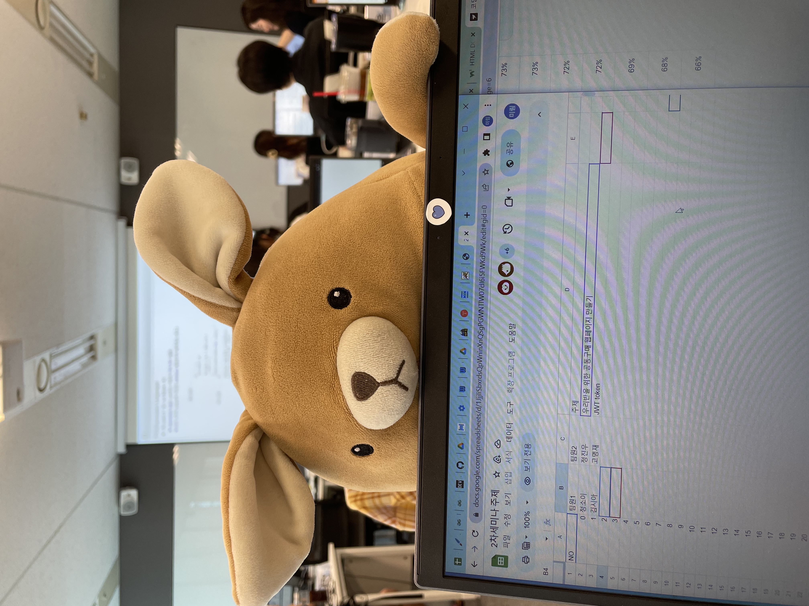

1.Please introduce yourself
코딩박사가 되고 싶은 정소이 입니다.
2. What is your favorite movie?
3. What is your favorite food?
샤브샤브입니당! 마라탕도 좋아해요
4. What are your strengths?
- 책임을 다 하려고 합니다
- 긍정적으로 생각하려고 노력해용
5. What are your hobbies and specialties?
- 게임하는걸 좋아해요!!
- 특기는 아주아주 잘 먹기 입니다 ㅎㅎ
6. What's your favorite item?
저희 반 마스코트 절미 입니다
7. How much can you drink?
한병입니당
8. Where do you want to go now?
집!!!!!!!!!!!
9. What is your dream that you want to achieve in 10 years?
안정적인 직장!
10. If you describe yourself in 5 letters?
우리반막내